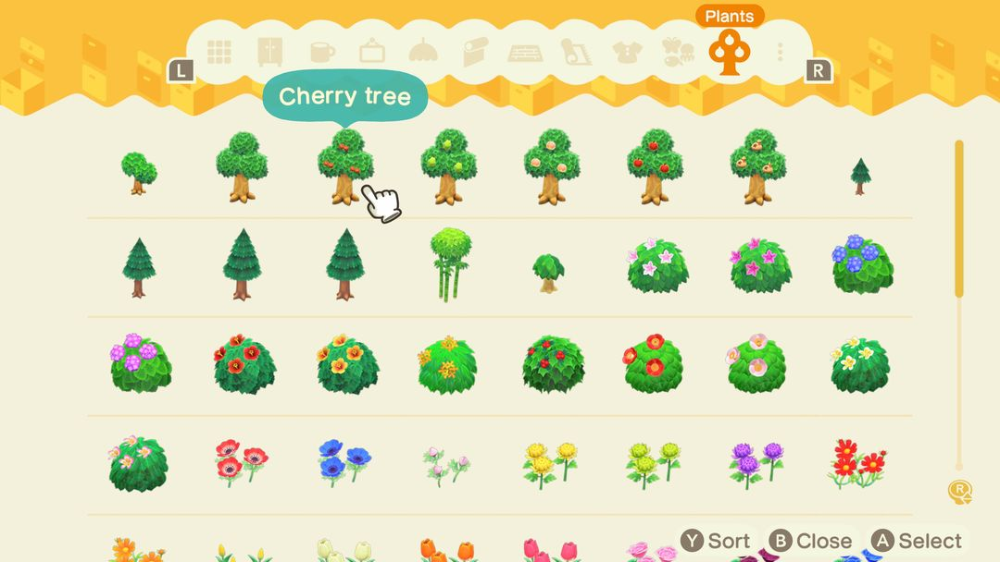
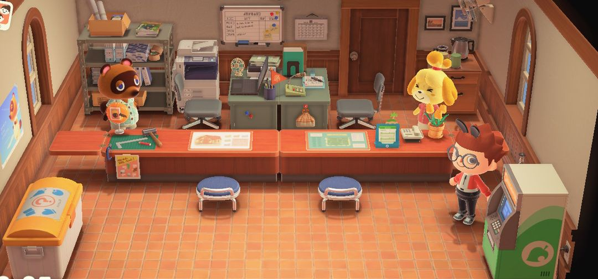
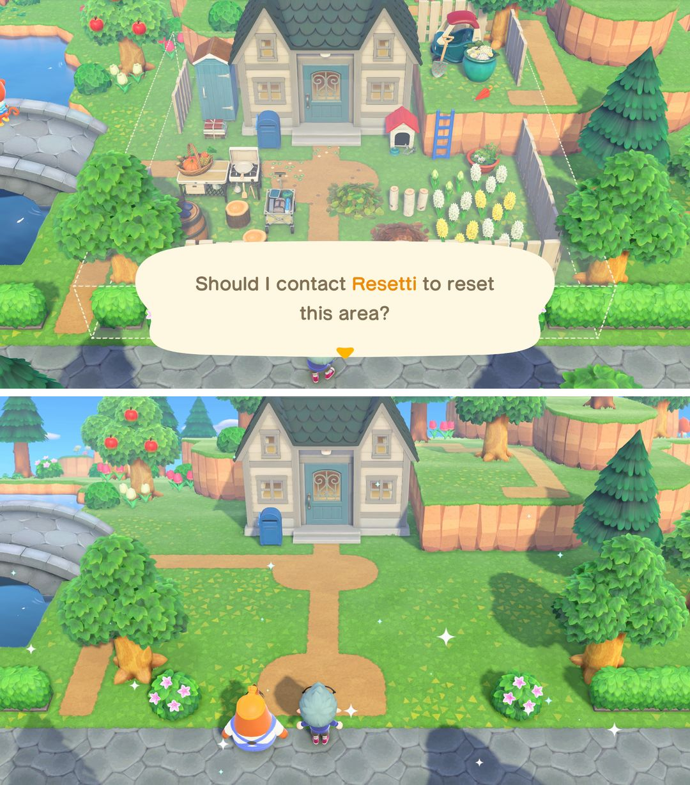
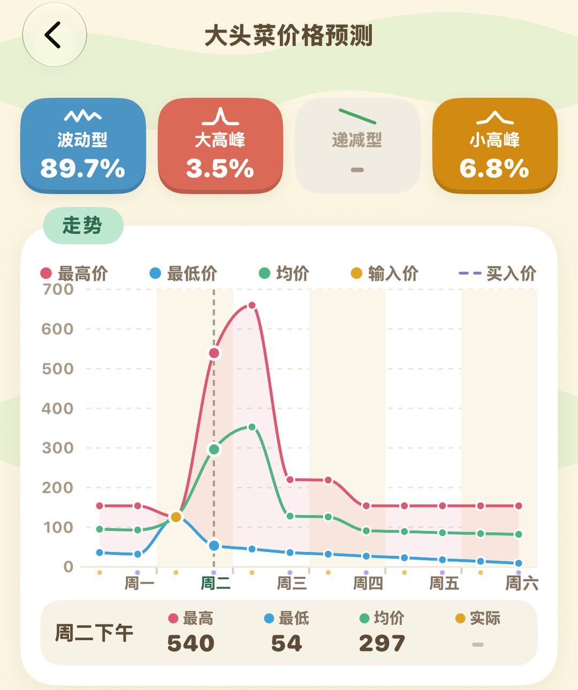

Animal Crossing trivia and time-saving tips (Ver. 3.0)
25 tips even longtime players might not know
Here are 25 small but handy things, split into four groups. The first two cover convenience features added in Ver. 3.0 — most got a single line in the patch notes, and plenty of players updated without noticing them. The last two are tried-and-true classic tricks for making Bells, hitting rocks, fishing, and catching bugs.
Anything marked "3.0" requires updating your game to Ver. 3.0 or later (a free update for both Switch and Switch 2). Anything marked "Switch 2" only works in the Switch 2 Edition.
01Storage and DIY (3.0)
The most practical change in 3.0 is that storage can now be expanded up to 9,000 slots. Once your storage is maxed out, talk to Tom Nook at Resident Services to expand it twice more: 1.5 million Bells for 7,000 slots and 1.8 million for 9,000. If you hoard furniture and materials, it's money well spent.
Storage can also hold flowers, trees, and bushes now. Remodeling used to mean digging them up one by one and replanting them on spare land for safekeeping; now you just put them in storage and plant them again once you're done terraforming.

Ver. 3.0 storage adds a Plants tab that holds grown trees, bushes, and flowers (Image: Nintendo Ver. 3.0 promo, via Nookipedia)
DIY got a lot smoother too. You can craft up to 10 at once, so for things you need lots of, like fences or fish bait, just pick a quantity and make them all in one go instead of mashing the button at your workbench.
Materials in storage can be used directly: when crafting or customizing furniture, materials and customization kits are pulled from storage automatically, so you don't have to move them into your pockets first. You can also buy 50 customization kits at once at the shop instead of buying them one by one.
Also, a DIY recipe sometimes turns up in the recycle box at Resident Services. Whenever you pass by, pop in and check — you might get one for free.

Resident Services: talk to Tom Nook at the left counter to expand storage; the yellow box in the lower left is the recycle box
02Island life (3.0 and Switch 2)
The handiest tool for remodeling is snapping to the grid with L. Tap L and your character steps to the exact center of their tile; hold L while walking and you'll only move in one direction. Walk this way while laying paths, putting up fences, or digging rivers, and your lines stay perfectly straight — never half a tile off.
If weeds have taken over your island, talk to Leif. As of 3.0, the garden shop's weeding service is down to 60,000 Bells, and you can call him in once there are 30 or more weeds to clear them all at once.
Planning a big layout overhaul? Resetti can clear the ground for you: the whole island, an entire beach, or an area you mark out — furniture, flowers, and ground designs all cleared in one go. The first time is free; after that it's 60,000 Bells per day, with unlimited uses that day once you've paid. Perfect for setting aside one day to tear down and rebuild.

Top: mark out an area for Resetti to clear; bottom: the result (Image: Nintendo Ver. 3.0 promo, via Nookipedia)
If you dive up a scallop and Pascal happens to pop up, give it to him. As of 3.0, this trade always gets you a pearl — no more luck involved.
As of 3.0, snowflakes and a few other items can be sold through the drop-off box. After the shop closes, just drop them in the box out front instead of waiting for it to open the next day.
The Switch 2 Edition adds a new use for the megaphone: call out a villager's name into the Switch 2's microphone to find out where they are. When you've been hunting for someone forever, one shout is faster than running all over the island.
03Bells and materials
Before hitting a rock, dig holes behind yourself. Each hit knocks you back a bit, and once you've been pushed away, you can't keep the combo going. Block off the space behind you and to your sides, and you won't get knocked back — you'll get all 8 materials.
Rocks give at most one gold nugget per day, so once you've gotten one, don't expect another that day. Also, one rock on your island gives Bells every day — remember which one it is.
When burying Bells in the glowing spot, 10,000 Bells is enough — the money tree reliably bears 30,000. Burying more is a gamble; most of the time the tree still only bears 30,000, so you're just sinking your stake.
There's a trick to shaking trees, too. At most two trees drop furniture each day, so once you've gotten two pieces, you can stop. Trees can also drop wasp nests, so hold your net before shaking, and the moment the wasps fly out, turn and swing.
Before selling, check the day's hot item. The shop pays double for it. The drop-off box is convenient, but it only pays 80% and doesn't apply the hot item bonus, so save your big-ticket items until the shop opens.
Foreign fruit is worth more. Fruit from a friend's island or sent by family sells for several times the price of your native fruit once you grow trees from it. If you have the space, plant a few more.
When you catch rare fish and bugs, save them for C.J. and Flick. When they visit your island (tourney days included), they buy at 1.5 times the shop price — 50% more than selling to the shop.
The turnip market is all about timing. Daisy Mae only shows up on Sunday mornings, and your turnips must be sold before the next Sunday morning or they'll rot; time traveling backward will also spoil them instantly. So buy from her before noon on Sunday, then keep an eye on the shop's buying price all week and sell when it's high.

Turnip Predict in Nook Circle: enter your buy price and daily selling prices to estimate the week's trend
04Fishing, bugs, and stamina
Little holes spurting water on the beach have manila clams buried underneath. Dig them up to craft fish bait, toss it in the water, and a fish shadow will swim over fast. Make a bunch before the Fishing Tourney and you'll save lots of time waiting for fish.
Three of the same fish or bug get you a model. Give fish to C.J. and bugs to Flick, and they'll mail you the finished model the next day — perfect for decorating your home.
If you run into a tarantula or scorpion at night, dig holes to wall yourself in first. It can't lunge at you, so you can wait calmly until it stops and then net it in one swing.
Eating fruit builds up strength. Each piece lets you dig up one tree or break one rock, and you can eat up to 10 in a row to stock up. If you're moving big trees, eat your fill first.
Coconut trees can go near grass, too. They only grow on sand, so lay a patch of sand path on the grass with the Island Designer and plant them there — you can have a row of palms away from the beach.
Nook Circle · Search "Nook Circle" on the App Store